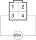
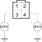
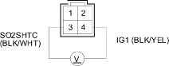

DTC 65:Secondary HO2S (Sensor 2) Heater Circuit Malfunction
NOTE: Information marked with an asterisk (*) applies to D15Y4, D17A2 (KU, KQ, KZ, FO models), D17Z1 (KQ model) engines.
- Reset the ECM/PCM (see page 11-167).
- Start the engine.
Is the MIL on and does it indicate DTC 65?
YES |
- Go to step 3. |
NO |
- Intermittent failure, system is OK at this time. Check for poor connections or loose wires at Secondary HO2S (Sensor 2) and at the ECM/PCM. |

- Turn the ignition switch OFF.
- Disconnect the secondary HO2S (Sensor 2) 4P connector.
- At the HO2S side, measure resistance between the secondary HO2S 4P connector terminals No. 3 and No. 4.

Is there 10-40 ohms?
YES |
- Go to step 6. |
NO |
- Replace the secondary HO2S (Sensor 2). |
- Check for continuity between body ground and the secondary HO2S 4P connector terminals No. 3 and No. 4 individually.

Is there continuity?
YES |
- Replace the Secondary HO2S (Sensor 2). |
NO |
- Go to step 7. |
- Turn the ignition switch ON (II).
- Measure voltage between the secondary HO2S 4P connector terminals No. 3 and No. 4.

Terminal side of male terminals
Is there battery voltage?
YES |
- Go to step 9. |
NO |
- Go to step 12. |
- Turn the ignition switch OFF.
- Disconnect ECM/PCM connector A (31P) (ECM/PCM connector E (31P))*.